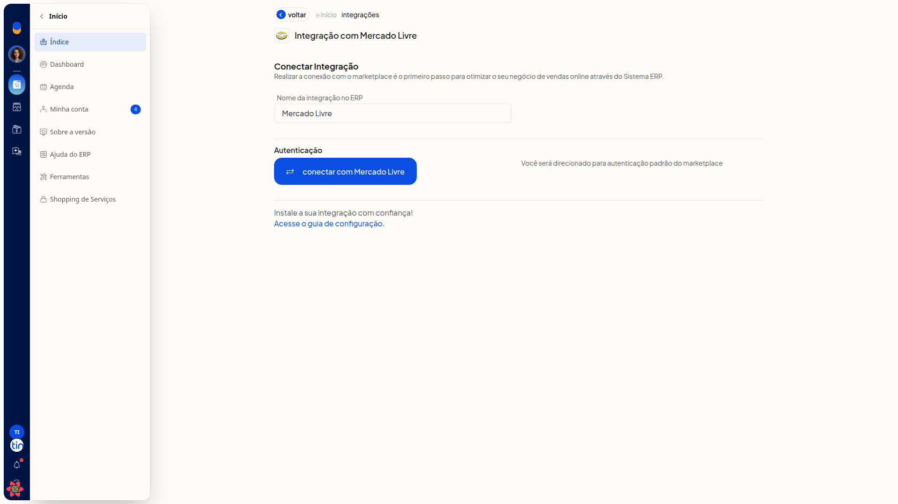
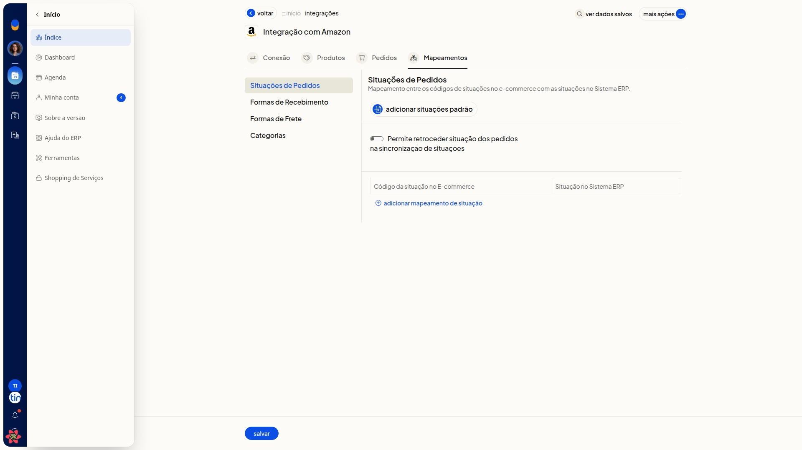
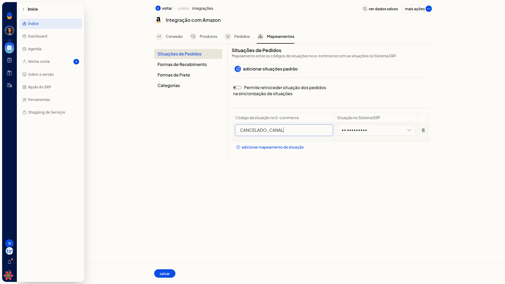

Configurar o status Em devolução e o estorno de estoque em pedidos cancelados
No mapeamento de situações de pedidos, você associa o código de situação do ecommerce a uma situação do ERP da Olist. Você pode apontar esse código para Em devolução.
O mapeamento fica na integração já cadastrada, em Mapeamentos > Situações de Pedidos.
Pré-requisitos
- A integração já precisa estar na lista de Integrações.
- Em uma instalação nova de canal do Hub da Olist, a tela para em Conectar Integração e o mapeamento de situações não aparece antes da autenticação.

Instruções
-
Acesse Integrações e clique em gerenciar na integração já cadastrada.
-
Se a tela abrir em Conectar Integração, clique em Mais ações e selecione Ignorar auth check.
-
Acesse Mapeamentos > Situações de Pedidos.

-
Clique em Adicionar mapeamento de situação.
-
Digite o código da situação do ecommerce em Código da situação no E-commerce. O campo não é obrigatório.
-
Selecione Em devolução em Situação no Sistema ERP. O campo não é obrigatório. A linha nova começa em Em aberto. A linha exibe o código digitado e Em devolução.
As opções de Situação no Sistema ERP são:
- Selecione
- Em aberto
- Faturado
- Cancelado
- Aprovado
- Preparando envio
- Enviado
- Entregue
- Pronto para envio
- Dados incompletos
- Não entregue
- Em devolução

- Clique em Salvar.
Informações adicionais
O estoque não é estornado antes da devolução chegar
Enquanto o envio não foi entregue e a devolução ainda não chegou, o ERP aplica o mapeamento e não estorna o estoque.
O estoque é estornado quando o produto é devolvido
Quando o produto é devolvido, o ERP considera a situação do pedido e estorna o estoque.